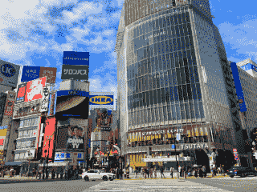

Places Worth Visiting in Tokyo
Many of my friends are going to Tokyo soon. This is a list of places
I'd recommend they visit while they're there (and also a future reference for me when I go back!).
Most of the food places are chains that can be found all across Tokyo.
Food Places I Really Like
-
Yoshinoya
A fast-food chain known for its affordable gyūdon. Amazing, amazing gyudon. Order it with raw egg and spring onions / scallions / cebollita de verdeo.
Learn to recognize the logo, as it's almost always only in Japanese. They have Wifi.
Important: Eggs don't have salmonella in Japan because food safety standards are extremely strict, and eggs are produced, cleaned, transported, and sold under tightly controlled conditions that minimize the risk of contamination; even when eaten raw.
-
Matsuya
Same as Yoshinoya, also amazing and super affordable. Do try the same things there!
Learn to recognize the logo, as it's almost always only in Japanese. Some open 24hs. They have Wifi.
-
Matsunoya
Not to be confused with Matsuya. Amazing, affordable tonkatsu.
Learn to recognize the logo, as it's almost always only in Japanese.
-
Sukiya
Same as Yoshinoya and Matsuya, although I like it less.
Learn to recognize the logo, as it's almost always only in Japanese. Some open 24hs.
-
Sushiro
On-demand conveyor belt sushi. Great and affordable. The logo is always in japanese.
-
CoCo Ichibanya
Curry chain. Amazing, amazing curry. Would go everyday. Try the extras!
-
Kura Sushi
Same as Sushiro, although I think I like sushiro better. You can win prizes when you order different dishes.
-
Rāmen Kagetsu Arashi
Amazing ramen.
-
Jonathan's
Best place to have breakfast. Very affordable if you go while the breakfast menu is available (iirc until 10:30 am or 11 am). They have Wifi.
I haven't tried their non-breakfast food.
-
Café Gusto
Owned by the same people as Jonathan's, great curry.
If I don't explicitly mention that a place is open 24 hours or has Wi-Fi, that doesn't mean it doesn't. It's just that I don't remember if it does.
Other Food Places Worth Mentioning
-
Mi Choripán
Choripanes y empanadas de queso. Impresionante, el flaco se vino a Buenos Aires a estudiar a un puestito de la costanera
y después se volvió a Japón y se puso este local. Todo 100% auténtico, es excelente, vale la pena visitarlo si no queda muy
de trasmano.
-
Caffè Veloce
Café y sanguchitos de miga mostly. Parece sacado de Microcentro.
-
Hub
British pub chain. A bit expensive for what it is, but it's great and worth a visit, especially if tired and cold.
Avoid MOS Burger like the plague. Saizeriya is also
worth mentioning, as it is what Japan thinks Italian food is like. The food is quite bad though.

Shopping
-
Tokyo Sky Tree
Tokyo Skytree is both a shopping mall and an observation deck.
I've never been to the observation deck, but I love the rest of the mall. It also has the Sumida Aquarium which is great.
-
Hobby Off / Book Off
Secondhand stores where you can find everything from used books and games to figures, electronics, and collectibles.
Worth visiting each different shop you find.
-
Janpara
A chain of used electronics shops, especially good for finding secondhand phones, laptops, cameras, and accessories.
-
Yodobashi Camera Akiba
Particularly the Akiba station one. It's huge, it has everything. Worth spending a whole day in there. Also visit the Uniqlo
that's on the upmost floor. It also has a food court (but it closes rather early, like all food places in Japan). Yodobashi
Camera always has Wifi.
-
Uniqlo Akiba
Literally above the Yodobashi Camera Akiba. Must visit if you go to Yodobashi Camera Akiba.
-
Pokémon Center
Specially the one close to the Marunouchi station, which is the main one. This one has the Pokemon Cafe, but to
eat there you have to get a reservation and it's rather hard.
-
Daiso
A popular 100-yen shop offering an impressive variety of household goods, stationery, snacks, and more.
Surprisingly high quality for the price. Great for gifts and souvenirs!
Museums
-
Tokyo National Museum
Japan's oldest and largest museum, showcasing traditional art, samurai armor, Buddhist sculptures, and historical artifacts from across the country.
-
Edo-Tokyo Museum
A fascinating museum that explores the transformation of Tokyo from the Edo period to the modern era, with large-scale models and immersive exhibits. Mind that it was closed for renovations the last two times I tried to visit it.
-
Small Worlds
A detailed miniature theme park with moving dioramas of cityscapes, spaceports, and anime worlds. Has a tiny Messi stuck to the wall at the entrance.
Other towns and cities
-
Takao (close to Tokyo)
A scenic mountain just outside Tokyo, perfect for a day hike. It offers lush trails, a temple near the summit, and beautiful autumn foliage. The Tokyo metro takes you there.
-
Sagamiko (close to Tokyo)
A lakeside area known for its nature, hot springs, and seasonal attractions. The Tokyo metro takes you there.
-
Takayama
A historic town in the mountains of Gifu Prefecture, known for its preserved Edo-period streets and local crafts. Great sake places as well.
There are many things to do in Tokyo (obviously). This list is mostly about
food places and other niche shops and places I particularly liked. If you are planning a trip
to Tokyo, I'd recommend you take a loot at the Tokyo Lonely Planet Guide (in Spanish)
and the books they sell (the books are really worth it, specially "Tokio de cerca").
I also recommend downloading the full Japanese language pack on Google Translate or Apple Translate,
so you can translate without needing internet, and also use the camera to take pictures of signs or
text and read what they say.
And download the full map of Tokyo on Google Maps so you can navigate offline.
The aquariums are also really nice. Wear good shoes, walk as much as you can!